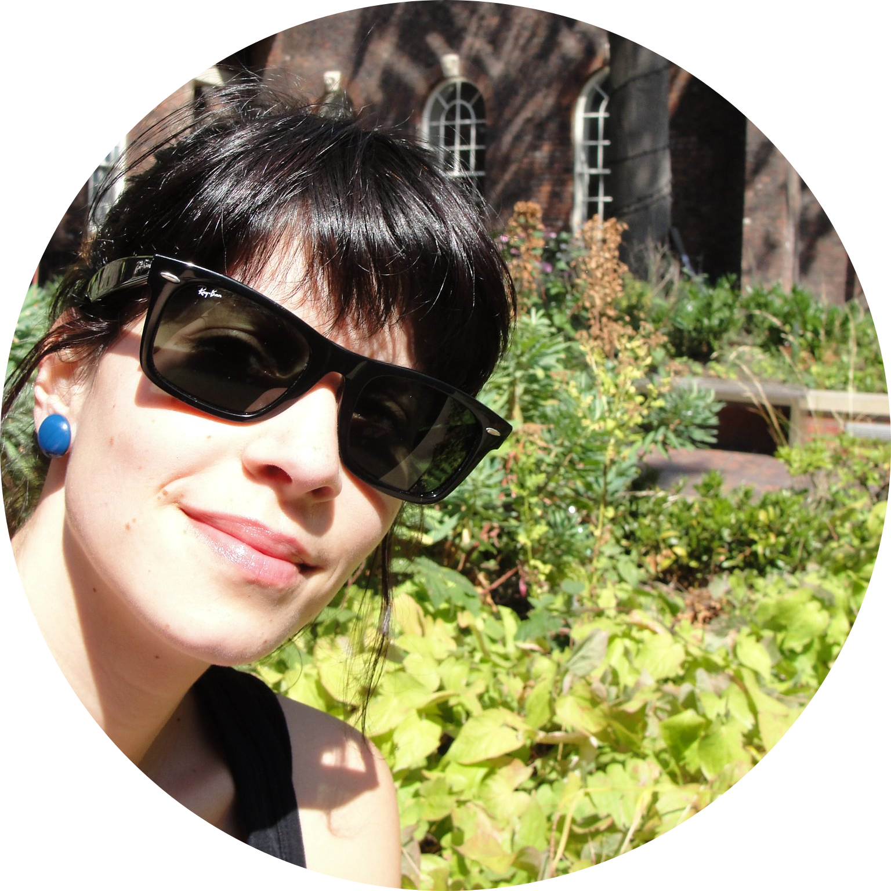

|  |
Sofia Melo Pereira, PhD
Enterprenuer, scientist, dreamer
- Experienced in scientific project management with a strong
cell/molecular biology background and multidisciplinary training:
aging, cell cycle, human genetics, stem cells, biomaterial science
and developmental biology.
- Track record of tackling ambitious projects, 7+ years of lab-based
research (tissue culture, cell-based assays, bioinformatics)
- Motto: doing things in a sustainable way with a touch of creativity
|